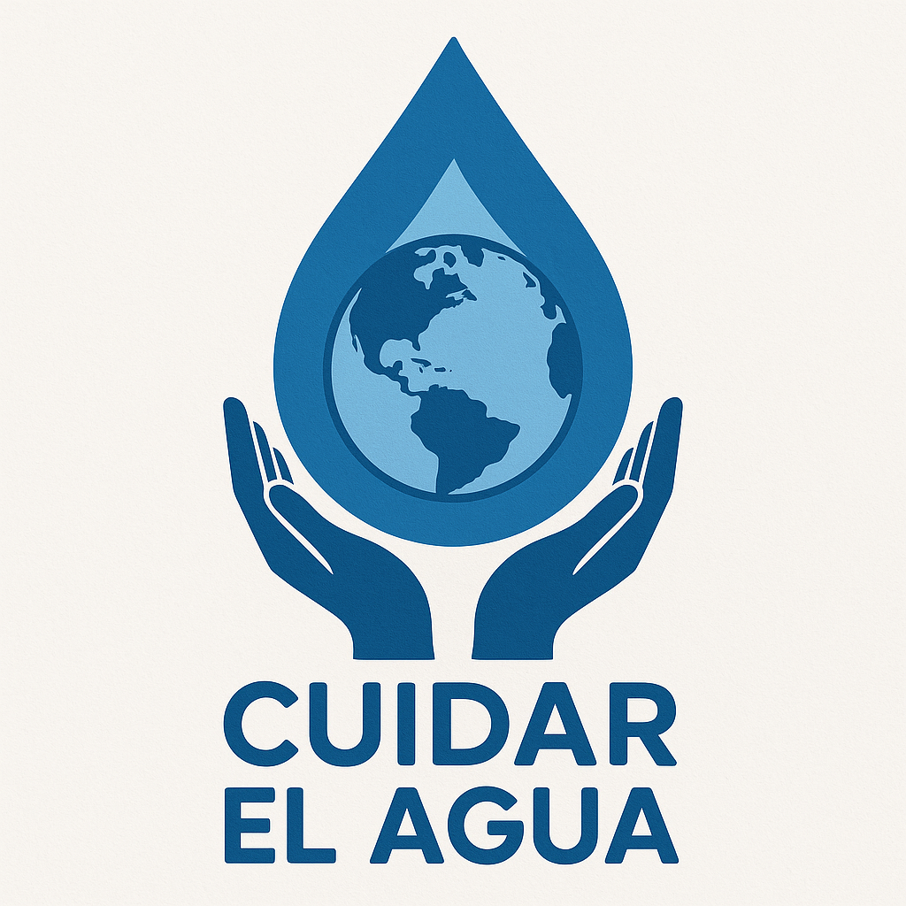

Organización
Somos un equipo multidisciplinario comprometido con el cambio social y ambiental. Trabajamos de forma colaborativa para desarrollar soluciones accesibles y sostenibles frente a los desafíos hídricos de Colombia.
Somos un equipo multidisciplinario comprometido con el cambio social y ambiental. Trabajamos de forma colaborativa para desarrollar soluciones accesibles y sostenibles frente a los desafíos hídricos de Colombia.